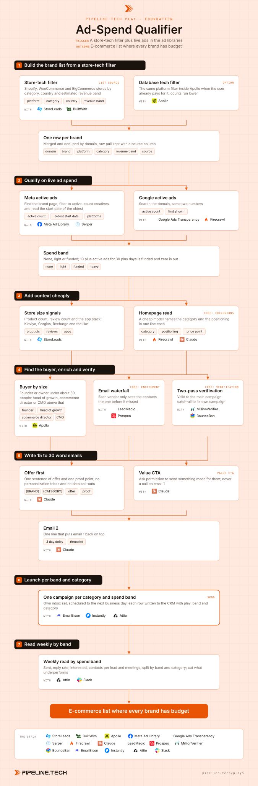

Ad-Spend Qualifier
Install the Pipeline.tech "Ad-Spend Qualifier" outbound play. Fetch https://raw.githubusercontent.com/pipeline-tech/plays/main/core/SKILL.md and https://raw.githubusercontent.com/pipeline-tech/plays/main/plays/ad-spend-qualifier/SKILL.md, save them as ~/.claude/skills/pipeline-outbound-core/SKILL.md and ~/.claude/skills/pipeline-ad-spend-qualifier/SKILL.md, then run /pipeline-ad-spend-qualifier.

E-commerce is the most crowded outbound market there is: tens of thousands of brands sit above any revenue floor, and every agency and tool vendor emails them. Two things still work, qualifying on budget before you write a word and keeping the email short enough to read on a phone. Live ad spend is the best free budget signal there is, so this play builds the list from the ad libraries up.
Load pipeline-outbound-core first. Where a step says "apply core", follow that section of the core skill.
Inputs
Ask for these before step 1, and save them to ./pipeline-plays.config.json:
- The ICP in one paragraph: store categories, revenue band, countries, the problem you solve and who owns it.
- Which platforms count: Shopify only, or Shopify plus WooCommerce and BigCommerce.
- The spend floor that means budget; default 10 or more active ads for 30 or more days.
- The offer in one sentence, one proof point, and the free thing you can make them: a welcome flow, ad creative, a teardown.
- Stack answers from core section 1.
Steps
1Build the brand list from a store-tech filter
- Pull every store on the chosen platforms by category, country and revenue band. StoreLeads filters on all four and estimates monthly sales; BuiltWith covers platform and country, with traffic as the size proxy.
- Apply core: lists. Keep platform, category and revenue band on every row; step 6 splits campaigns on them.
2Qualify on live ad spend
- Open each brand's page in the Meta Ad Library (a Serper search on brand name plus domain finds it when the store does not link it), filter to active, and record creatives running and the start date of the oldest still live. Repeat in the Google Ads Transparency Center by domain. Firecrawl or a browser script reads both at volume.
- Band the result. None: zero active ads anywhere, so no budget for you. Light: under 10 creatives or under 30 days. Funded: 10 or more for 30 or more days, a budget and someone whose job is spending it. Heavy: 40 or more. Store counts, oldest start date and check date on every row.
- The none band leaves the list here with a dated flag.
3Add context cheaply
- Add product count, review count and the installed app stack. Apps show maturity and which offer fits; a brand on Klaviyo and Recharge is a different conversation from one with no email tool.
- A cheap model reads the homepage and returns category in two words, positioning in one sentence and a rough price point; vendor category labels are wrong often enough to split a campaign badly.
- Apply core: exclusions, and drop marketplaces and resellers before any paid people lookup.
4Find the buyer, enrich and verify
- Under about 50 people, the founder or owner. Above that, the head of growth, ecommerce director or CMO, whoever owns the channel your offer touches. One contact per brand, two at most.
- Apply core: enrichment.
- Apply core: verification. A founder with only a personal address goes to a separate lane, only after the business address has failed both verifiers, and sends from its own campaign.
5Write 15 to 30 word emails
- Apply core: copy and send rules, with one override: email 1 is 15 to 30 words, not 25 to 55. E-commerce buyers do not read; they want a good offer and a very short email, and every sentence spent on cleverness is one they skip.
- Structure: the offer in one sentence, one proof point in a clause, then a value CTA asking permission to send something made for them: "Mind if I send over a free welcome flow built for {BRAND}?" No compliments about the store, no quoting their ad count, no sign you looked at their ads. Never a call on email 1; a booking link only after a yes.
- Email 2 is a one-line threaded nudge three days later; its only job is a second look at email 1.
- Subject lines per core. Three angle variants for email 1 plus one nudge, approved by the user before upload.
6Launch per band and category
- Apply core: send rules. One campaign per category and spend band, so beauty funded and beauty heavy read on their own. Never mix bands; the point of step 2 is to learn which band buys.
- Upload with
{BRAND}and{CATEGORY}, schedule the next business day, and write every contact to the CRM with play, spend band, ad count, category and campaign.
7Read weekly by band
- Weekly: sent, reply rate, interested, contacts per lead and meetings, split by spend band and category. A good offer here lands one lead per few hundred contacts; a band above one per thousand is not paying for its inboxes.
- Cut underperforming bands after two full weeks, move inboxes to bands that convert, and recycle cut brands through the TAM Rotation play. Re-run step 2 on the none band every 90 days.
- Apply core: credits and handoff.
Guardrails
- Zero active ads means no budget for you. Those brands never enter a campaign; they wait with a date.
- Ad spend is a filter, never an opener. Do not quote ad counts, creative or run dates in any email. Per core, never say you were watching them.
- Email 1 is 15 to 30 words, no exceptions: offer first, one proof point, value CTA. No call and no link.
- One brand, one sequence, at most two contacts. Never run this and another cold play on the same domain in the same month.
- Personal addresses live in their own campaign, only after the business address has failed both verifiers.
Example run
User: "/pipeline-ad-spend-qualifier for our Klaviyo email and SMS agency, Shopify brands in the US, beauty and supplements, 1M to 20M a year, we can build a free welcome flow"
- Asked for offer line and proof point, kept the default spend floor, confirmed EmailBison plus Attio plus Slack.
- StoreLeads returned 6,480 Shopify stores inside the band; BuiltWith added 1,120. Merged to 7,050 brands after dedupe by domain.
- Ad check: 2,310 with zero active ads parked, 2,460 light, 2,280 funded, of which 640 heavy.
- Context added for the 2,280 funded brands; 190 removed as customers, in sequence or marketplaces. 2,090 remain.
- 2,640 contacts found; 2,210 verified valid, 160 catch-all to their own campaign, 270 personal-address-only founders held for a later lane.
- Six campaigns: funded and heavy per category, plus one light band per category as a baseline. Copy approved at 22 and 26 words, scheduled for Monday.
- Week three read: funded at one lead per 240 contacts, heavy at one per 180, light at one per 610. Both light bands cut and sent to TAM Rotation.